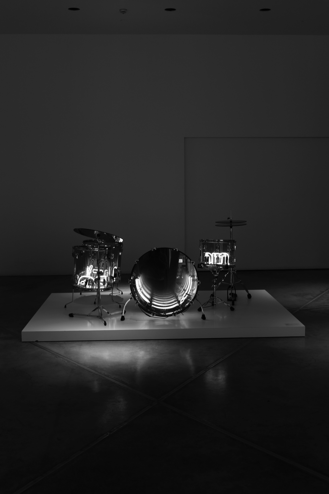

GUITAR
It's an intrument with strings attached in it . There are types in guitar like L-SERIES,A-SERIES,FG/FGX,APX,CPX and many more ,in it you'll find base guitar , acoustic guitar , semi-acoustic , semi-electro-acoustic, even the strings also carry it's types like 'NYLON STRING' or 'METAL STRINGS'.
In fact you'll guitar's , one which carry 6 strings & the other with 12 strings. The chords of 6 strings named as E,B,G,D,A,E. After knowing the chords MAJOR & MINORS come's in.
 To know more...
To know more...
PIANO
If we talk about piano , it carry type's such as GRAND PIANOS,UPRIGHT PIANOS,Clavinova,ARIUS,P Series,Portable Grand & Synthesizers. In it there are many chords like C,D,E,F,G,A,B, then again the same cycle goes on from C-chord to B-chord these chords you'll find in white keys & chords like C# , D# , F# , G# & B flat you'll find on black keys
A piano usually has a protective wooden case surrounding the soundboard and metal strings, which are strung under great tension on a heavy metal frame. Pressing one or more keys on the piano's keyboard causes a wooden or plastic hammer (typically padded with firm felt) to strike the strings .

To know more...
DRUM
The drum is a member of the percussion group of musical instruments. Drums are usually played by striking with the hand, or with one or two sticks with or without padding. A wide variety of sticks are used, including wooden sticks and sticks with soft beaters of felt on the end. In jazz, some drummers use brushes for a smoother, quieter sound. In many traditional cultures, drums have a symbolic function and are used in religious ceremonies. Drums are often used in music therapy, especially hand drums, because of their tactile nature and easy use by a wide variety of people.

To know more...